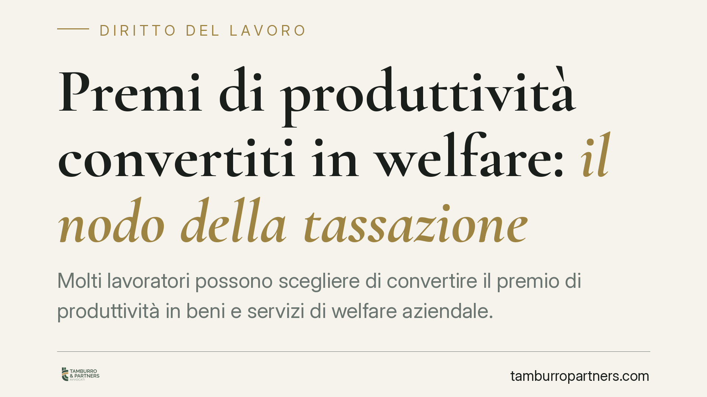

Premi di produttività convertiti in welfare: il nodo della tassazione
Molti lavoratori possono scegliere di convertire il premio di produttività in beni e servizi di welfare aziendale. La questione fiscale è ricorrente: il trattamento agevolato vale anche in caso di conversione? La risposta incide sulla retribuzione netta e sulla progettazione dei piani aziendali. Vediamo la cornice normativa, le novità annunciate per il prossimo biennio e cosa è prudente verificare prima di procedere.

Il contesto
Il premio di produttività è la somma variabile che il datore eroga al raggiungimento di obiettivi di produttività, redditività, qualità o efficienza, misurabili e verificabili. La legge consente, a determinate condizioni, di tassarlo in modo più favorevole rispetto all'aliquota ordinaria IRPEF.
Un meccanismo molto diffuso è la cosiddetta conversione: il lavoratore rinuncia al premio in denaro e lo riceve sotto forma di beni e servizi di welfare aziendale (previdenza complementare, rimborsi, servizi alla persona, fringe benefit). Il quesito pratico è se, dopo la conversione, resti applicabile l'agevolazione prevista per i premi monetari.
Inquadramento normativo
La detassazione dei premi di risultato trova la sua cornice nell'art. 1, comma 184, della L. 208/2015 (legge di Bilancio 2016). La norma prevede l'applicazione di un'imposta sostitutiva dell'IRPEF e delle relative addizionali sui premi di risultato, entro un tetto annuo e a condizione che il lavoratore non superi una determinata soglia di reddito da lavoro dipendente nell'anno precedente.
Lo stesso impianto consente al dipendente di optare per la sostituzione, in tutto o in parte, del premio con prestazioni di welfare. In questo caso rilevano l'art. 51, commi 2 e 3, del TUIR, che individuano le prestazioni e i beni che non concorrono a formare il reddito di lavoro dipendente. Il principio consolidato è che la conversione in welfare non peggiora la posizione del lavoratore: le somme convertite in prestazioni rientranti nei commi 2 e 3 dell'art. 51 TUIR restano escluse da tassazione secondo la disciplina propria di ciascuna voce.
Nota di aggiornamento. Per il biennio 2026-2027 è stato annunciato un intervento sulla misura dell'imposta sostitutiva e sul tetto dei premi detassabili. I valori circolati nel dibattito — in particolare un'aliquota ridotta e un innalzamento del tetto annuo — devono essere letti alla luce del testo definitivo della legge di Bilancio e degli eventuali documenti di prassi dell'Agenzia delle Entrate, che vanno sempre citati con numero e anno completi (ad esempio "risoluzione n. 22/E del 2026"). Negli esercizi più recenti la disciplina ordinaria ha previsto aliquota sostitutiva al 5% e tetto di 3.000 euro: ogni variazione va verificata sulla fonte ufficiale prima di applicarla.
Implicazioni pratiche
Per il datore di lavoro, la questione non è solo fiscale ma organizzativa. L'agevolazione presuppone un accordo collettivo (aziendale o territoriale) depositato, che colleghi il premio a obiettivi misurabili. Senza questo presupposto, nessuna aliquota agevolata è applicabile, a prescindere dalla conversione in welfare.
Per il lavoratore, la convenienza della conversione dipende dal confronto tra l'imposta sostitutiva sul premio monetario e l'esenzione piena di cui godono molte prestazioni di welfare. In diversi casi il welfare è più vantaggioso, ma la valutazione è individuale e dipende dal reddito complessivo e dalla composizione del paniere.
Un punto spesso frainteso: convertire il premio in welfare non cancella la disciplina specifica di ciascuna voce. I fringe benefit, ad esempio, restano esenti solo entro la soglia prevista dall'art. 51, comma 3, TUIR; superata quella soglia, l'intero valore concorre a formare il reddito. Esistono quindi due limiti distinti da tenere separati: il tetto del premio detassabile e le soglie di esenzione proprie dei singoli benefit.
Cosa fare in concreto
- Verificare il testo definitivo della legge di Bilancio per il biennio 2026-2027 quanto a tetto dei premi, aliquota sostitutiva e soglia reddituale di accesso, senza dare per acquisiti i valori ancora in discussione.
- Controllare l'accordo collettivo: l'agevolazione richiede un accordo aziendale o territoriale depositato, con obiettivi misurabili e verificabili.
- Distinguere i due limiti: il tetto del premio detassabile e le soglie di esenzione dei singoli benefit (art. 51, commi 2 e 3, TUIR) seguono regole proprie e non vanno confusi.
- Mappare il paniere di welfare: verificare che ogni voce convertita rientri effettivamente tra le prestazioni escluse da tassazione e resti entro la soglia prevista.
- È opportuno far validare accordi e piani di welfare prima dell'erogazione, per evitare recuperi d'imposta e contestazioni sui contributi.
Conclusioni
La conversione del premio in welfare resta uno strumento di politica retributiva efficiente, purché fondata su un accordo valido e su un paniere costruito nel rispetto delle soglie di esenzione. Le novità annunciate per il 2026-2027 possono ampliarne la convenienza, ma la loro applicazione richiede il riscontro sul testo normativo definitivo e sulla prassi ufficiale.
---
Contributo informativo a cura di Tamburro & Partners — Avv. Giuseppe Tamburro. Non costituisce parere legale.
Ogni storia di lavoro ha i suoi tempi.
Se gestisci HR e vuoi un confronto su contenzioso, ispezioni o licenziamenti, scrivi allo studio. Ti rispondiamo entro un giorno lavorativo.